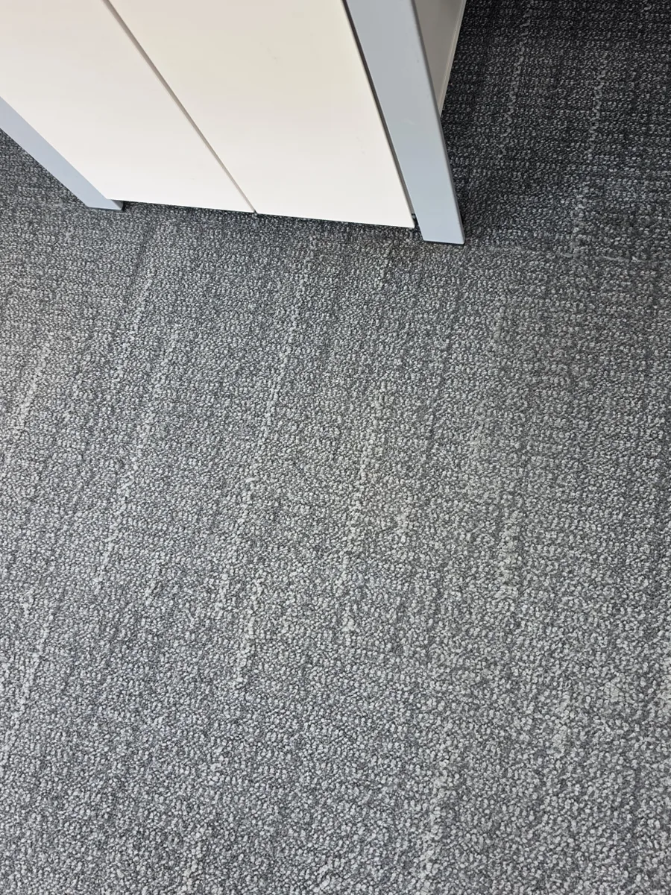
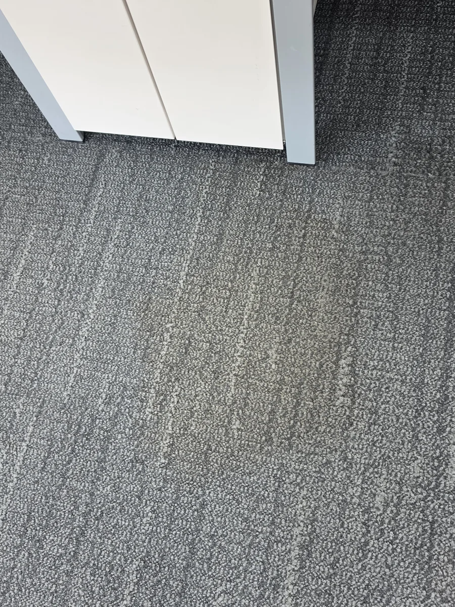
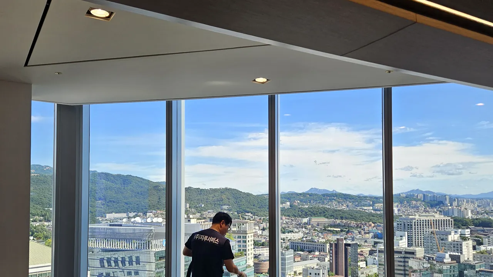
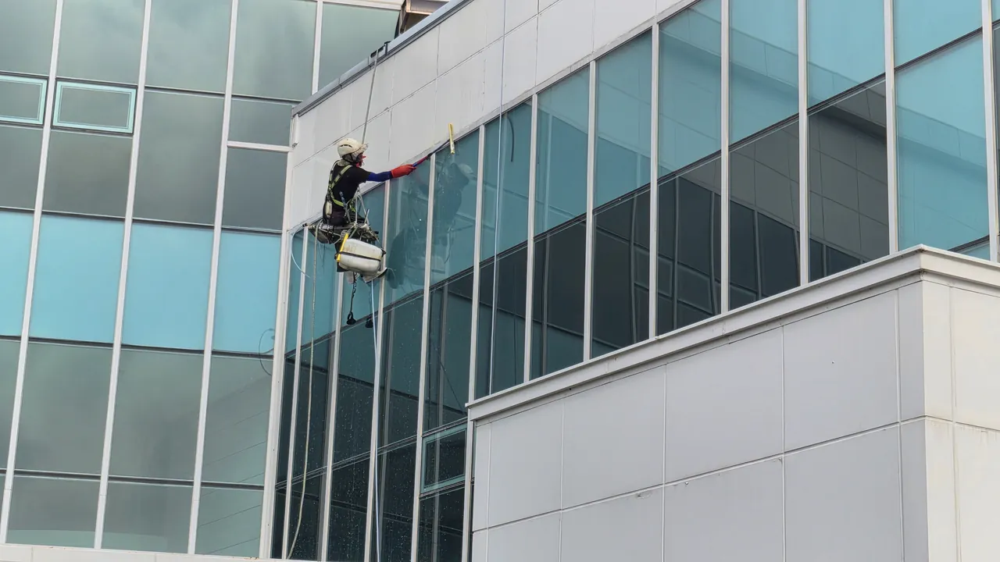
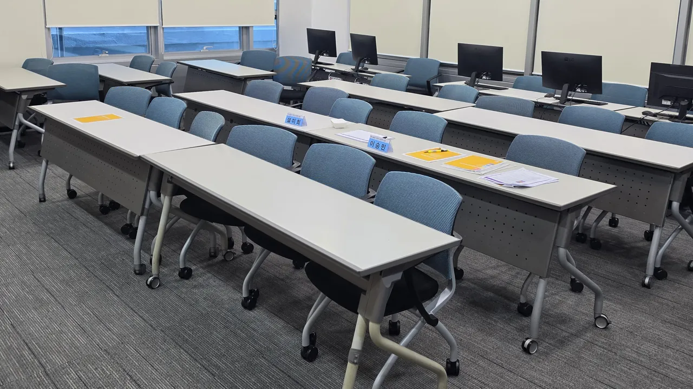
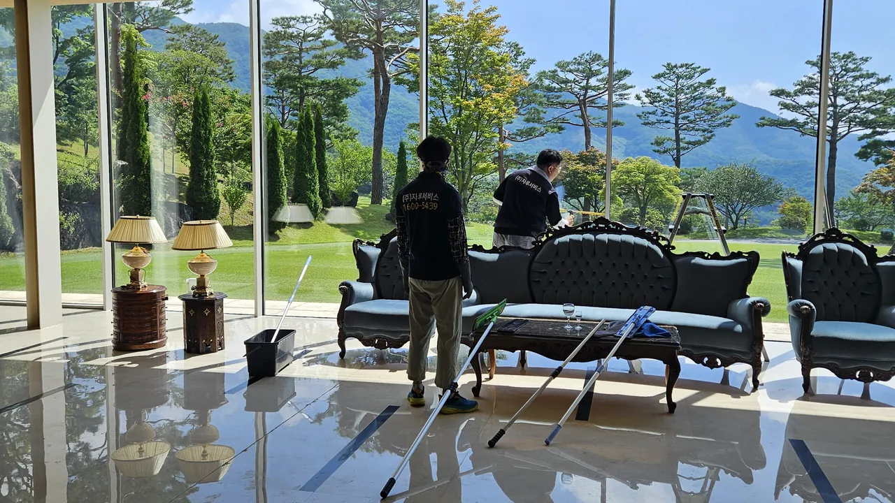

01 · AIR CONDITIONER
왜 분해세척인가
필터만 닦으면 바람은 깨끗해 보입니다. 하지만 곰팡이와 먼지는 송풍팬과 냉각핀 안쪽에 남습니다.
카페트도 같습니다. 청소기가 닿지 않는 섬유 아래에 미세먼지와 진드기가 쌓입니다. 그래서 자루서비스는 뜯고, 불리고, 빨아들입니다.
기업 · 오피스 · 빌딩 전문 청소
천장 속 시스템 에어컨은 송풍팬과 열교환기까지 8부위를 분해해 씻고, 카페트는 pH 7.0 중성세제와 고압 세척 장비로 섬유 깊이까지 씻어 냅니다. 외벽과 유리창, 바닥 왁스까지 한 팀이 맡습니다.
왜 분해세척인가
필터만 닦으면 바람은 깨끗해 보입니다. 하지만 곰팡이와 먼지는 송풍팬과 냉각핀 안쪽에 남습니다.
카페트도 같습니다. 청소기가 닿지 않는 섬유 아래에 미세먼지와 진드기가 쌓입니다. 그래서 자루서비스는 뜯고, 불리고, 빨아들입니다.
숫자로 보는 자루서비스
스크롤해서 닦아 보세요
핵심 서비스
여러 층, 수십 대 규모의 중대형 공간을 전문으로 합니다. 에어컨과 카페트를 같은 날 함께 맡기실 수도 있습니다.
곰팡이 냄새와 약한 바람의 원인인 송풍팬과 열교환기까지 8부위를 분해해, 부품마다 맞는 전용 세척제로 씻습니다.
pH 7.0 중성세제로 오염을 풀고, 고압으로 헹구는 동시에 빨아들입니다. 미세먼지와 진드기까지 걷어 냅니다.
에어컨 분해세척 11단계
천장형 시스템 에어컨을 어떤 순서로 씻는지 그림으로 보여 드립니다. 스크롤을 내리면 한 단계씩 진행됩니다.
오염 정도를 함께 눈으로 확인하고, 어디를 어떻게 씻을지 설명드립니다.
패널과 필터를 내리고 송풍팬(터보팬)까지 분리합니다.
살균제와 세척제로 냉각핀과 내부를 1차로 씻습니다.
물이 고이는 배수구와 드레인 팬 주변을 따로 씻어 냅니다.
강력한 살균제로 송풍팬과 필터를 한 번 더 씻습니다.
깨끗한 상태가 오래 가도록 세균 억제제를 코팅합니다.
눈에 보이는 패널과 케이스까지 닦아 마무리합니다.
분리한 부품을 제자리에 다시 조립합니다.
원하시면 실외기 상태 점검과 클리닝을 함께 진행합니다.
바람과 냉방을 확인합니다. 냉매 보충이 필요하면 별도 비용으로 안내드립니다.
작업 결과를 함께 확인한 뒤 마칩니다.
작업 전 · 후
실제 현장에서 같은 자리를 작업 전과 후에 찍은 사진입니다. 가운데 손잡이를 좌우로 끌어 보세요.
사진은 같은 날 같은 자리에서 찍었고, 겹쳐 보이도록 위치만 맞췄습니다. 색은 바꾸지 않았습니다.


작업 전작업 후PROCHEM 트럭마운트
미국 Prochem 트럭마운트 장비는 차량에 실린 채로 뜨거운 고압 스팀을 만들어 최대 360m 호스로 보냅니다. 장비를 층마다 옮기지 않으니 넓은 층도 빠르게 끝납니다.
현장 영상
천장 속 에어컨 분해부터 카페트 습식 세척, 외벽 고소 작업까지 자루서비스 기사들이 실제로 작업한 현장입니다. 영상을 누르면 크게 볼 수 있습니다.
영상은 실제 현장 사진에 AI로 움직임을 더해 만들었습니다.
공간별 서비스

사무실은 카페트와 천장형 에어컨이 함께 있는 경우가 많습니다. 같은 날 함께 맡기시면 일정 한 번으로 끝납니다.

건물 단위로 맡기실 수 있습니다. 공용부 바닥, 대리석 연마 · 광택, 외벽, 물탱크(저수조) 청소까지 창구 하나로 관리합니다.

교실과 강당의 에어컨, 바닥 왁스, 석면 정밀청소와 새집증후군 광촉매 시공까지 가능합니다.

영업 전후 시간에 맞춰 바닥과 의자를 정리합니다. 바닥 왁스와 유리창도 함께 맡기실 수 있습니다.
에어컨 살균세척과 소독을 함께 진행합니다. 진료 시간을 피해 일정을 잡아 드립니다.
전산실과 클린룸의 바닥과 내부를 장비에 맞춰 청소합니다.
주요 거래처: 국회, 국방부, 합동참모본부, 국세청, 서울특별시, SH공사, 경찰청, KBS, EBS, 금융결제원, 금융투자협회, 서울대학교, 연세대학교, 이화여자대학교, 강북삼성병원, 삼성서울병원, 고려대학교의료원, 삼성카드, 삼성생명, 쿠팡, 토스, CJ ENM, 롯데카드, 라이나생명, 코리아세븐, KB국민은행, 씨티은행, NHN, 교보생명, 키움증권, LG전자, SK, 현대모비스, Microsoft, 한국코카콜라, 갤러리아백화점
진행 순서
공간 종류와 대수, 원하시는 일정을 알려 주세요.
담당자가 현장을 보고 오염 상태를 함께 확인합니다.
작업 범위와 비용을 항목별로 정리해 드립니다.
정해진 날짜에 작업하고, 마친 뒤 함께 검수합니다.
0원모든 견적 방문은 무료입니다.
믿고 맡기실 수 있도록
건물위생관리업으로 신고한 업체이고, 공공기관 조달에 필요한 직접생산 확인을 받았습니다. 작업 중 사고에 대비한 영업배상책임보험에도 가입되어 있습니다.
전체 서비스 21품목
전체 서비스: 시스템 에어컨 분해세척, 카페트 스팀, 카페트 습식, 마루청소, 전산실(클린룸) 청소, 영업장·매장 크리닝, 파티션 세탁, 의자 세탁, 소파 세탁, 버티컬·블라인드 초음파세척, 사무용 가구 세척, 바닥 왁스, 준공청소, 외벽청소, 대리석 연마·광택, 물탱크(저수조) 청소, 전화기 소독, 건물종합관리, 소독, 새집증후군 광촉매 시공, 석면 정밀청소
자주 묻는 질문
아니요. 모든 견적 방문은 무료입니다. 전화 상담 후 담당자가 현장을 보고 견적서를 드리며, 견적서를 확인하신 뒤 계약 여부를 정하시면 됩니다.
청소 전 오염 상태를 함께 확인한 뒤 전면 커버 · 필터 · 송풍기를 분해하고, 1차 살균세척, 배수구 클리닝, 냉각팬 · 필터 2차 살균세척, 세균 억제제 코팅, 케이스 클리닝, 조립과 시운전 순으로 11단계를 진행합니다.
실외기 점검 · 클리닝은 선택해서 함께 받으실 수 있습니다. 시운전 때 이상 유무를 확인하고, 냉매 보충이 필요하면 별도 비용으로 진행합니다.
네. 사무용 의자, 파티션, 소파 세탁과 버티컬 · 블라인드 초음파 세척까지 같은 날 함께 진행할 수 있습니다.
냉각핀은 늘 젖어 있어 세균과 곰팡이가 번식하기 쉽습니다. 필터와 냉각핀은 한 달에 한 번 정도 관리하는 것이 좋고, 곰팡이 냄새가 나거나 바람이 약해졌다면 분해세척 시기입니다.
에어컨 아래 책상과 모니터는 비닐로 덮고 시작합니다. 분해한 에어컨에는 투명 세척 커버를 씌워 씻은 물이 아래로 떨어지지 않게 받아 냅니다.
대부분의 오염은 세척으로 빠지지만, 오래된 커피 얼룩이나 화분에서 흘러내린 물 자국은 섬유에 물이 든 것이라 세척 후 누렇게 남을 수 있습니다(황변). 작업 전에 미리 말씀드립니다.
무료 견적
방문해서 현장을 보고 견적서를 드립니다. 남겨 주신 연락처로 담당자가 직접 연락드립니다.